PROCEDURAL DAMAGE
SHADERS
Custom damage generation shaders aimed to aid in simulating structural and environmental decay for game ready worldbuilding.
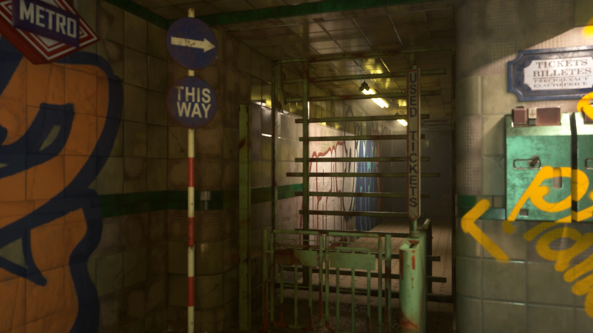
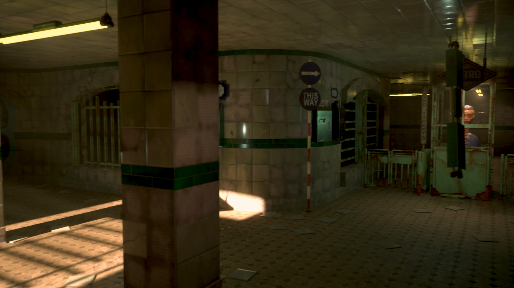
This shader consists of a procedural damage simulator for tiled materials.
The way it works is by generating 1 or 2 masks (depending on user input) which then get overlaid on top of each other to interpolate materials in different stages of decay. Those masks depend on user input to match them to the tile size and then get generated randomly based on a seed and the mesh's position in the world.
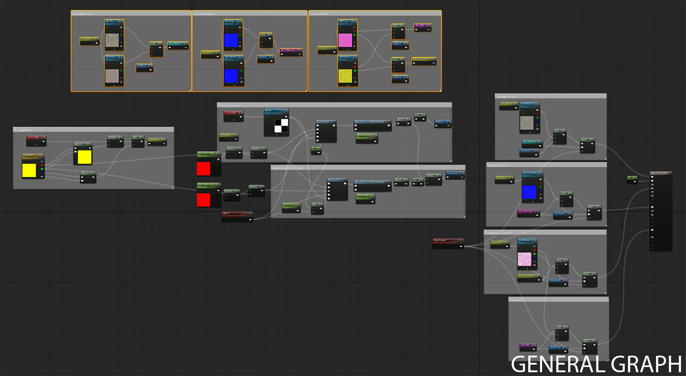
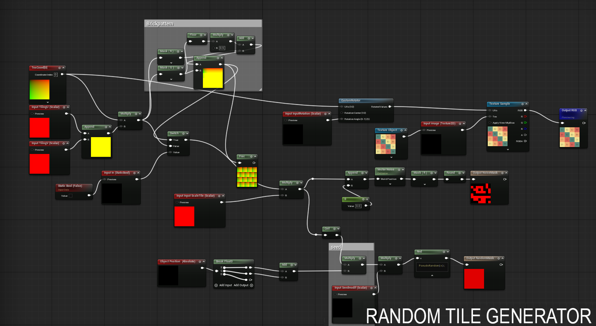
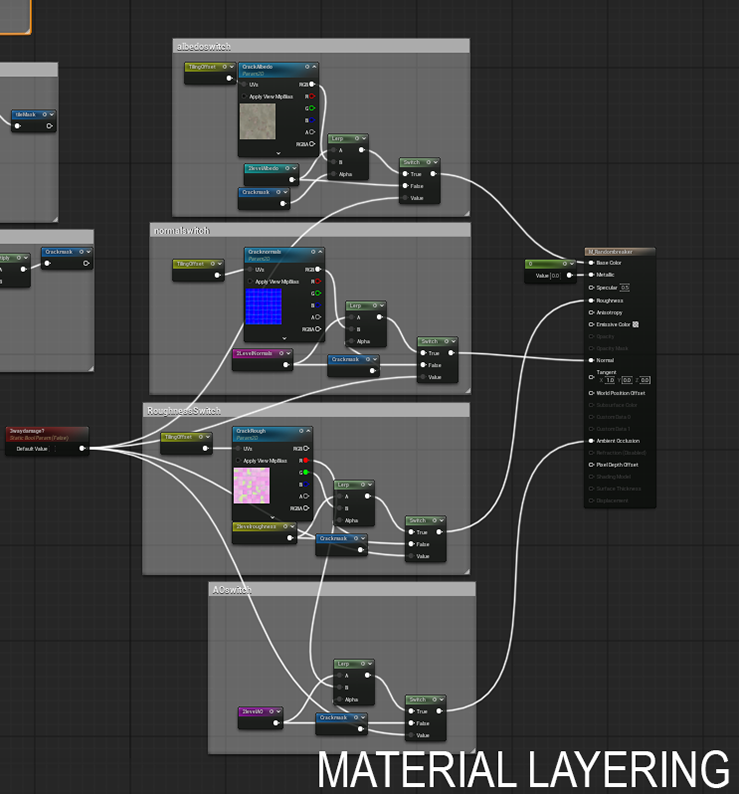
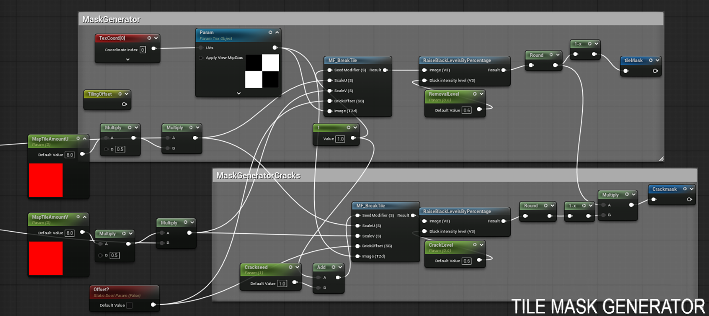
This shader is aimed towards individual props.
The idea behind it was to allow the user to simulate different types of wear across props based on the material they simulate and ambient conditions by configuring the noise masks, the amount of wear, and if it follows a direction (if any). In the case of the scene shown as an example, the shader is generating a peeling paint and rust damage caused by humidity. So the weathering will be more intense the closer we get to the ground as it will be in closer contact with puddles and humid surfaces.
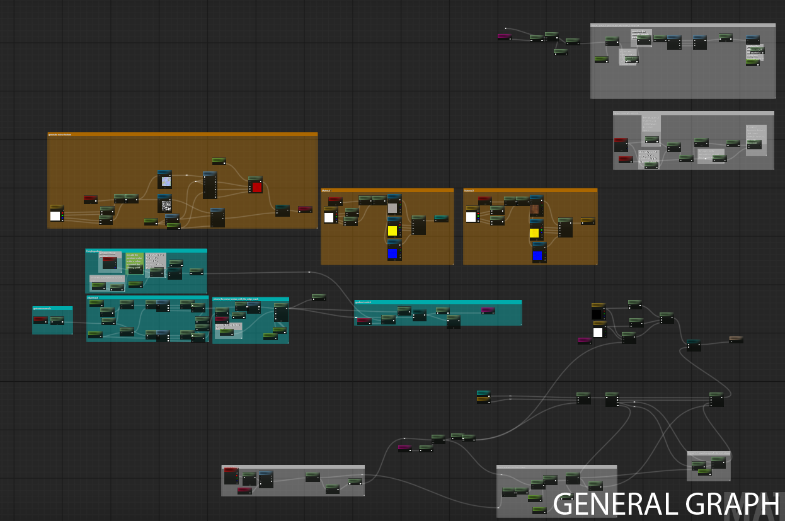
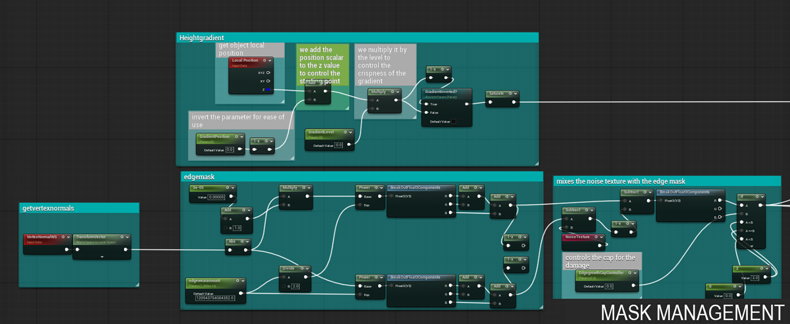
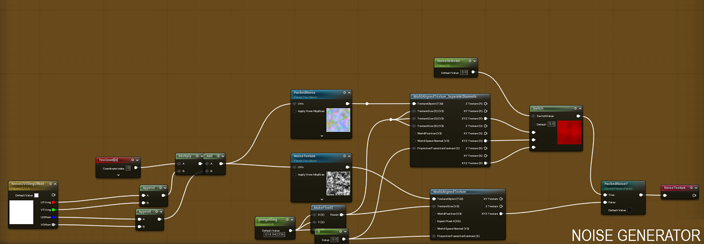
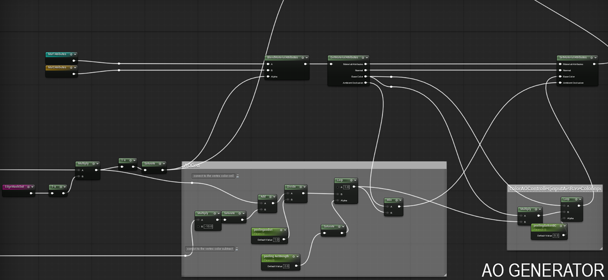
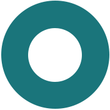